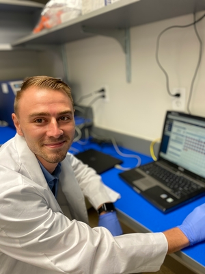
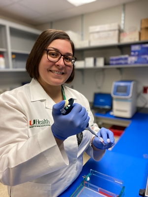
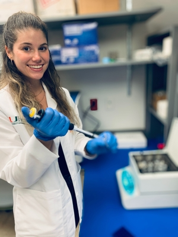
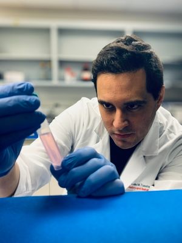

About
Last updated: 2024-09-20
Checks: 2 0
Knit directory:
RegionalMicroglialTranscriptomicsandEpigenomics/
This reproducible R Markdown analysis was created with workflowr (version 1.7.0). The Checks tab describes the reproducibility checks that were applied when the results were created. The Past versions tab lists the development history.
Great! Since the R Markdown file has been committed to the Git repository, you know the exact version of the code that produced these results.
Great! You are using Git for version control. Tracking code development and connecting the code version to the results is critical for reproducibility.
The results in this page were generated with repository version 2d89e21. See the Past versions tab to see a history of the changes made to the R Markdown and HTML files.
Note that you need to be careful to ensure that all relevant files for
the analysis have been committed to Git prior to generating the results
(you can use wflow_publish or
wflow_git_commit). workflowr only checks the R Markdown
file, but you know if there are other scripts or data files that it
depends on. Below is the status of the Git repository when the results
were generated:
Untracked files:
Untracked: WorkFlowR_BRmic_Setup.txt
Untracked: code/BRMic_RNASeq_PreProcessingCodeFinal.sh
Unstaged changes:
Modified: README.md
Note that any generated files, e.g. HTML, png, CSS, etc., are not included in this status report because it is ok for generated content to have uncommitted changes.
These are the previous versions of the repository in which changes were
made to the R Markdown (analysis/about.Rmd) and HTML
(docs/about.html) files. If you’ve configured a remote Git
repository (see ?wflow_git_remote), click on the hyperlinks
in the table below to view the files as they were in that past version.
| File | Version | Author | Date | Message |
|---|---|---|---|---|
| Rmd | 2d89e21 | avm27 | 2024-09-20 | Publishing updated files |
| html | a269901 | avm27 | 2024-08-08 | Build site. |
| Rmd | b1b9923 | avm27 | 2024-08-08 | Start workflowr project. |
Luis Tuesta Lab
University of Miami Miller School of Medicine
Rosenstiel
Medical Science Building
1600 NW 10th Ave.
Rooms: 7014, 7019
Miami, FL 33136
Our Research
Addiction is a chronic, relapsing disease characterized by compulsive drug-taking and the inability to stop despite negative consequences. Underlying the behavioral progression of the disease are changes in gene expression that are regulated in a cell-type specific fashion. Owing to the rich cell heterogeneity in the brain, understanding how gene expression is regulated throughout the course of addiction in specific cell populations remains both a technical and conceptual challenge for our field.
To this end, our team focuses on understanding the addicted brain by tailoring molecular profiling methods and bioinformatics approaches to ask how transcription is regulated within genetically-defined cell populations in the brain reward system, with special emphasis on dopamine neurons and microglia. Combined with mouse models of drug addiction (IV self-administration), we work to identify genetic targets that can regulate different stages of the disease, and ultimately curb drug-taking and prevent relapse in addicted individuals.
Our Team
Alexander Margetts, B.S.

Ph.D. Candidate
Cancer Graduate Program
University of Miami Miller School of Medicine
Undergrad: University of Miami
Email: avm27@miami.edu
Samara J. Vilca, B.A.

Ph.D. Candidate
Neuroscience Graduate Program
University of Miami Miller School of Medicine
Undergrad: Florida Atlantic University
Email: svilca@miami.edu
Tate A. Pollock, B.S.

Ph.D. Candidate
Neuroscience Graduate Program
University of Miami Miller School of Medicine
Undergrad: University of Alabama Birmingham
Email: tap125@miami.edu
Lauren Bystrom, B.S.

Ph.D. Candidate
Neuroscience Graduate Program
University of Miami Miller School of Medicine
Undergrad: University of Minnesota
Email: llb81@miami.edu
Luis M. Tuesta, Ph.D.

Assistant Professor
Department of Psychiatry and Behavioral Sciences
University of Miami Miller School of Medicine
Postdoc: Harvard Medical School/HHMI
Graduate: The Scripps Research Institute
Undergrad: University of Miami
Email: ltuesta@miami.edu
Funding
Supported By:
K01-DA045294
DP1-DA051858